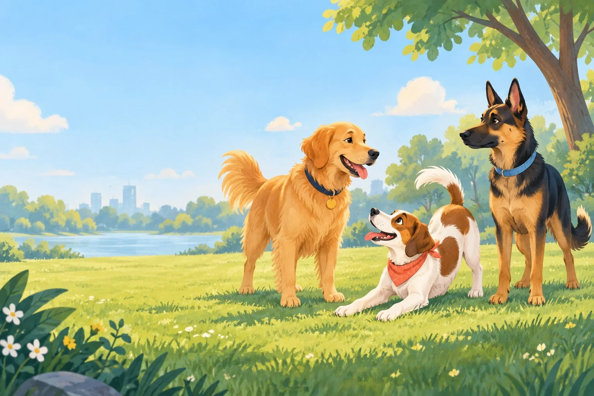

Read the whole dog.
Learn what your dog may be saying through their eyes, ears, mouth, posture, tail, movement, and the situation around them.

What do you need help with?
Choose by the situation, not a page name. Each path opens guidance already in WagSignals.
What is your dog saying right now?
Check eyes, ears, mouth, body, tail, movement, and context together.
Explore all 40 cluesUnderstand a behavior
Make sense of sniffing, barking, chewing, digging, jumping, and other everyday actions.
See common behaviors →Teach a useful skill
Start with a small, reward-based skill for home, walks, or everyday confidence.
Choose a training lesson →Solve a hard moment
Find safer next steps for biting, unsafe eating, guarding, lunging, distress, or escape.
Choose a challenge guide →Check the whole body
Scan face to feet, then find calm safety steps when a dog needs more space.
Open the body & safety check →Prepare for a situation
Look up visitors, dog meetings, handling, walks, food, or time home alone.
Find a real-life example →Return to a saved clue
Pick up a Daily Wag reminder you saved on this device.
Open saved clues →One minute today. A sharper read tomorrow.
🐾 0 pawprints · 🔥 0 days · 0 clues · decode best 0/20
When in doubt, make space.
Distance is information. Give your dog a clear exit, lower the intensity, and notice whether their body softens. Every dog is an individual, so health, history, and context matter.